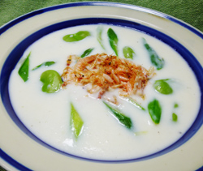

グリーンアスパラとソラマメの
桜エビクリームスープ
桜エビクリームスープ
- 調理時間：30 分
- （一人当たり）
- カロリー：302kcal
- たんぱく質：19.2g
- 脂質：14.5g
- 塩分：1.7g


＜２人分＞
- 桜エビ（生）
- 80g
- グリーンアスパラ
- 3本
- ソラマメ
- 100g
- 塩
- 少々
- コショウ
- 少々
- ・薄力粉
- 15g
- ・バター
- 15g
- ・牛乳
- 400cc
- ・塩、コショウ
- 少々
A


- 鍋にお湯を沸かし、桜エビをサッと湯通しする。湯通しした桜エビはフライパンで空炒りする。
- ソラマメは塩を加えた熱湯でゆでて薄皮をむく。グリーンアスパラは斜め切りにしてサッと下ゆでする。
- Aの材料でホワイトソースを作っておく。
１. 厚手の鍋にバターを入れ、弱めの中火にかける。バターが半分溶けたところで薄力粉を加えて手早く混ぜ、全体が白っぽくなり、さらさらしてくるまで、焦がさないように炒める。
２. 牛乳を数回に分けて加える。大きい気泡が出てきた後も、焦がさないよう気をつけながら火にかける。塩、コショウで味をととのえる。 - ③のフライパンに下ゆでしたグリーンアスパラとソラマメを加えて、加熱する。
塩、コショウで味をととのえ、最後に桜エビを加える。全体があたたまったら、火を止めて完成。
グリーンアスパラとソラマメの
桜エビクリームスープ
桜エビの漁が行われるのは日本でも静岡県の駿河湾だけで、漁獲量も制限されています。しかも鮮度が落ちやすく、獲れてすぐに食べないと、変色して色が落ちてしまうというデリケートで希少な魚介です。
栄養価の面でも桜エビはとても優秀。殻にはカルシウムが豊富ですし、食物繊維の一種であるキチン・キトサンもとることができます。キチン・キトサンは不溶性食物繊維なので、大腸がんの予防や血圧低下作用、殺菌作用が期待されています。
生の桜エビは季節限定品です。旬の食材を堪能しましょう。